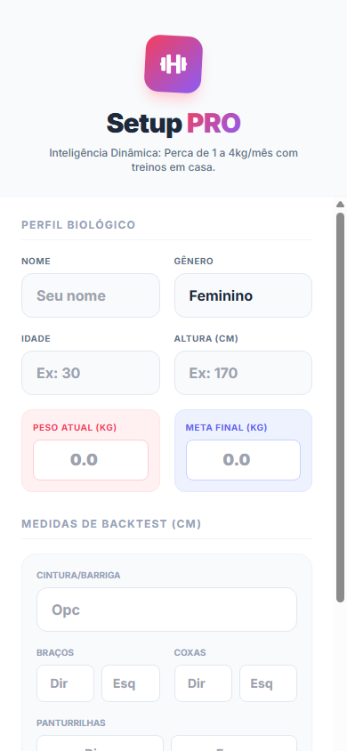
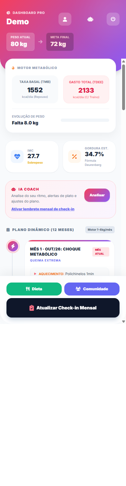
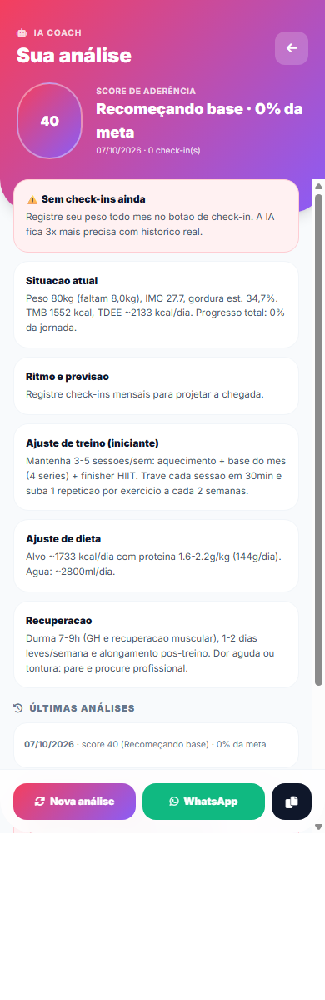
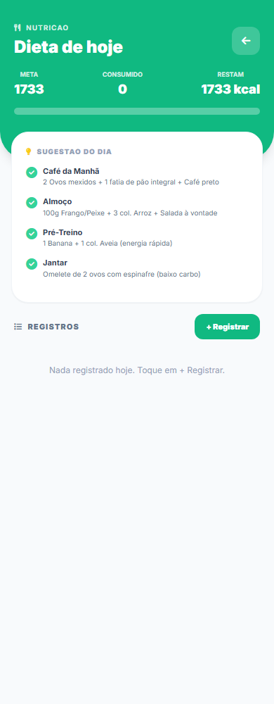
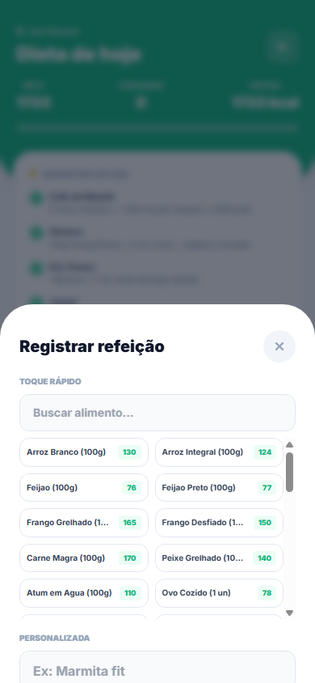
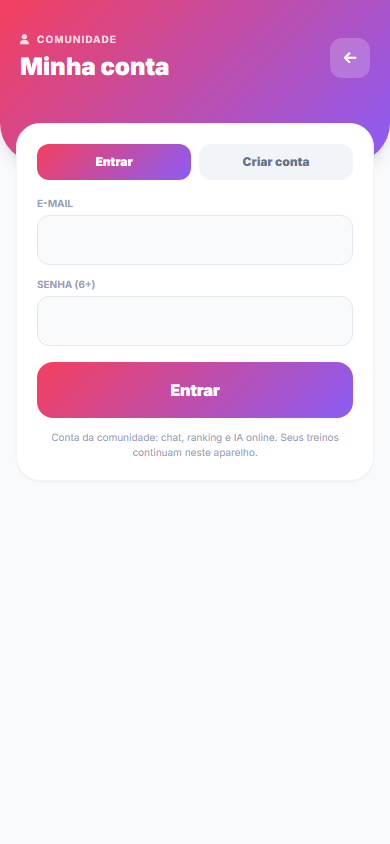
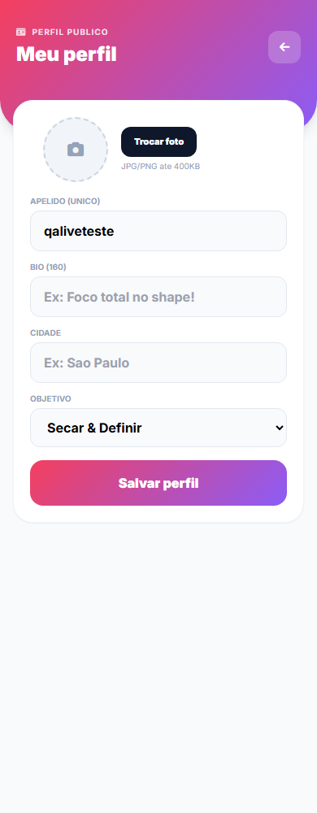
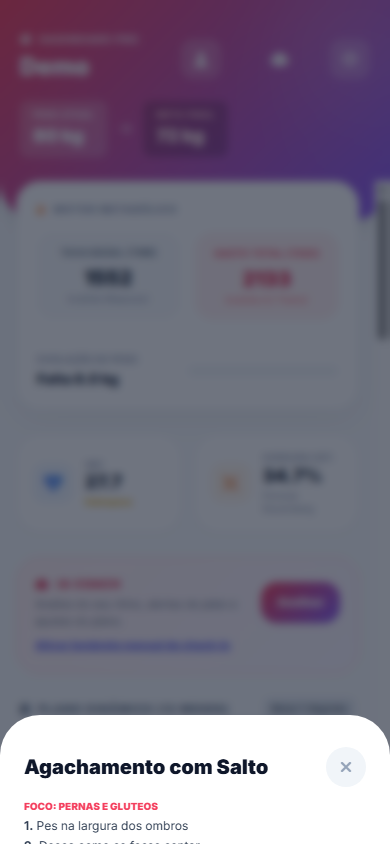
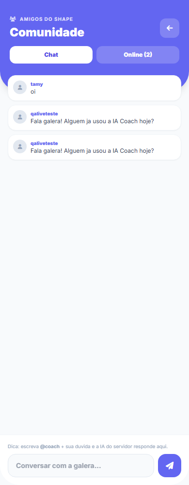

Do zero ao shape em 16 passos · Abrir o app
Abra o app, preencha nome, peso atual e meta. Idade, altura, peso e meta ajudam a IA mas não são obrigatórios. Escolha Secar ou Ganho de Massa, seu nível e tempo por dia. Toque em Gerar Motor Algorítmico.

Você vê peso atual → meta, TMB/TDEE (quanto seu corpo gasta), IMC, gráfico de evolução, medidas e o plano de 12 meses com datas reais. Toque em qualquer exercício para ver a execução.

Toque em Analisar no cartão IA Coach. Você recebe score de 0-100, situação atual, ritmo e previsão de chegada, alertas (platô, ritmo inseguro...) e ajustes de treino, dieta e recuperação. Dá pra compartilhar no WhatsApp.

Em Dieta você vê META do dia, CONSUMIDO e o que RESTA. Tudo fica na dieta servidor (não some se limpar o celular).
0.5, 1, 2 ou até 20. Tem botões rápidos 1 / 2 / 5 / 10 / 20.Excluir: no histórico de Hoje, toque na lixeira ao lado do item. Dias passados são travados (só leitura) para não bagunçar seu histórico.
Ver 7 / 30 dias: em Dieta toque nas abas Hoje / 7d / 30d. O app busca do servidor.


O app tem 212 alimentos em 10 categorias: proteína, carbo, fruta, verdura, legume, laticínio, gordura, doce, bebida e mais.
Em Perfil marque Diabetes e/ou Hipertensão + suas alergias. É opcional, mas muda tudo:
Abra a aba Hábitos (topo: água / sono / sequência).
Selos: vitrine colorida = conquistado, cinza = falta. Exemplos: primeiro check-in, 5L de água no dia, 7 noites com 7h+ de sono, sequência 7d e 30d. Veja também seu ranking de sequência e o histórico Hoje / 7 / 30d.
O push 18h é um aviso do app (“Hora de registrar!”). É push de verdade (chega mesmo com app fechado), não só alarme na tela.
Como ativa — Android:
Como ativa — iPhone: push no iPhone só funciona com o app instalado (ver passo 9) e iOS 16.4+. Depois de instalar: abra pelo ícone, vá em Hábitos > Lembrete e toque Permitir.
Como muda o horário: em Hábitos toque no horário (ex: 18:00), digite o novo HH:MM e salve. O servidor dispara todo minuto no horário de Brasília.
PWA instalar = instalar o Setup sem loja, direto do navegador. Fica mais rápido e funciona offline.
/setup/ → menu ⋮ → Instalar app / Adicionar à tela inicial → Instalar./setup/ → Compartilhar → Adicionar à Tela de Início → Adicionar.No app, Hábitos > Instalar mostra checklist do que falta. Funciona offline após a primeira abertura.
Toque no bonequinho no topo: crie a conta grátis (nome, apelido, e-mail, senha). Depois edite o perfil: foto, bio, cidade, objetivo + alergias e condições de saúde. A conta libera comunidade, dieta servidor e IA online.


Na timeline, toque em qualquer exercício: veja músculos, passo a passo, erro comum e o botão Ver execução em vídeo.

Em Comunidade, fale no chat com quem treina junto e veja quem está online. Escreva @coach + sua dúvida e a IA do servidor responde na conversa.

Desafio 7d: grupo oficial no WhatsApp para fazer 7 dias seguidos (treino + dieta + água). Entre pelo link em Afiliados > Materiais > Comunidade. Regras: poste seu check diário, sem spam, sem oferta fora do dia.
Todo mês toque em Atualizar Check-in Mensal e informe peso + medidas. O plano dos próximos meses se recalibra sozinho. Se passar 30 dias, ative o lembrete no cartão IA Coach.
O plano PRO libera IA completa, dieta servidor ilimitada e histórico 30d. Pagamento é QR Pix manual:
Garantia: 7 dias incondicional. Não gostou? Chame no WhatsApp com o comprovante que devolvemos. Chave Pix oficial e WhatsApp estão na tela de pagamento — não pague fora dela.
Afiliados 30% = você recebe 30% de cada venda feita com seu link (ex: anual R$199,90 → ~R$59,97). Pagamento via Pix direto, mínimo R$50, prazo de garantia 7d.
/setup/pro/?ref=seuapelido e o QR no painel.?ref= dentro do grupo do desafio.Corporate é o plano para academia / empresa acompanhar alunos e equipe: